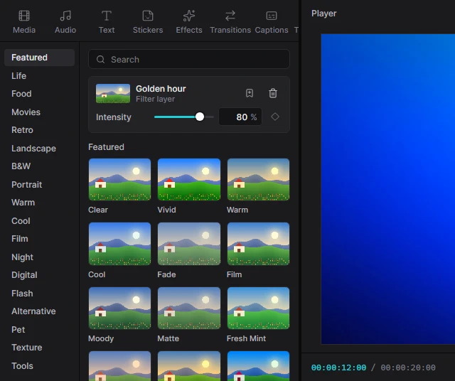
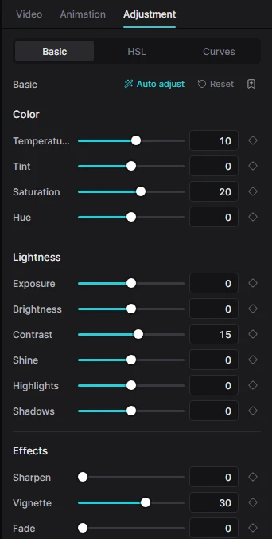
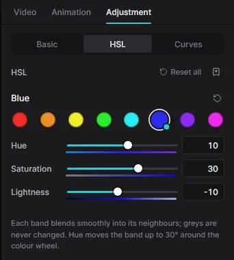

Для людейТворчість7 хв читання
Ефекти, переходи й колір
Переходи згладжують склейки, ефекти додають руху й атмосфери, фільтри та інструменти кольору задають настрій. Усе на цій сторінці — оригінальні розробки Kadr, які обробляються на вашому комп’ютері.
Подивіться в русі, перш ніж додати
Затримайте вказівник миші на картці — і її зображення оживе: перехід перенесе вас із сонячного пейзажу в нічне місто, ефект запрацює на зразковому кадрі, фільтр покаже кадр до і після, а анімація кліпу зрушить маленький кліп на темній сцені (пунктирна рамка позначає, де він зупиниться). Відведіть мишу — і повернеться звичайна картинка.
Попередній перегляд працює всюди, де ви вибираєте вигляд: на вкладках Transitions, Effects, Filters, Text і Stickers (разом зі згенерованими фонами), на вкладці Animation, у Text → Effects і Text → Animate, у сітках заміни на панелях Transition, Effect і Filter, у стилях субтитрів і в My kit. Нерухомі елементи — статичні стікери, шрифти, голосові ефекти — просто показують своє зображення.
Kadr малює ці прев’ю сам, коли ви вперше наводите на картку, і зберігає їх, тож уперше доведеться секунду зачекати, а далі все з’являється миттєво. Якщо у Windows вимкнено анімацію (Settings → Accessibility → Visual effects → Animation effects), прев’ю теж не рухатимуться.
Переходи

Перехід відтворюється між двома кліпами, що стоять впритул на одній доріжці (зазвичай на головній). Їх 221 у 19 категоріях — від простих розчинень і зсувів до 3D-куба, ірисових форм, засвічень і глітчів, а також шторки (рваний папір, мазки фарби, зигзаги), наближення, обертання й вири, рідина й чорнило, частинки й розбите скло, кіноплівка, ретро та розділений екран. Різкі панорами (whip pan), шторки, зсуви, поштовхи й чимало інших мають Direction (напрямок), а переходи з краєм-маскою — ще й Softness (м’якість краю).
Додати перехід
- На таймлайні клацніть лівий із двох кліпів, які треба з’єднати.
- Відкрийте вкладку Transitions. Підказка вгорі підтвердить: «Applies to the cut after the selected clip» — перехід застосується до склейки після виділеного кліпу.
- Натисніть + на переході (або двічі клацніть його). Можна й просто перетягнути перехід на склейку на таймлайні.
На склейці з’явиться маленький значок переходу. Apply to all (поруч із підказкою) ставить вибраний перехід на всі склейки головної доріжки одразу.
Налаштувати або прибрати
Клацніть значок на таймлайні — в інспекторі відкриється панель Transition (або виділіть лівий кліп і клацніть назву переходу в Video → Transition to next clip). Там задаються Duration (тривалість), Direction (напрямок) і Softness (м’якість) — якщо перехід їх підтримує; у розділі Replace перехід можна замінити іншим, а також Apply to all чи Remove. Коли значок виділено, Delete теж прибирає перехід. Перехід може тривати щонайбільше половину коротшого з двох кліпів.
Відеоефекти

На вкладці Effects — 195 ефектів у 20 категоріях: Party, Retro, Glitch, Lens, Light, Sparkle, Comics, Nature, Split та інших, а також нові Motion (затвор, dolly zoom, желе), Frame (миттєве фото, видошукач, заокруглена картка), Stylize (піксельне сортування, пазл, 8-біт), Weather (краплі на склі, хуртовина, гроза), Dreamy (світлячки, пелюстки, полярне сяйво) і Color (кольоровий акцент, обмін каналів, соляризація). Застосовувати їх можна двома способами:
- Як шар: натисніть + (або перетягніть картку на таймлайн). Ефект ляже на власну доріжку ефектів у позиції курсора відтворення й діятиме на все, що під ним, доки триває кліп ефекту. Тягніть його краї, щоб змінити початок і кінець.
- На один кліп: виділіть кліп, клацніть картку ефекту, щоб позначити її, і натисніть Apply to clip у рядку підказки. Ефект отримає лише цей кліп — він з’явиться в розділі Effects на вкладці Video цього кліпу.
Виділіть ефект (шар або список ефектів кліпу), щоб налаштувати його: кожен ефект має власні повзунки — Intensity (сила), Speed (швидкість) і до чотирьох своїх: щільність, розмір, туман, вітер тощо. Кнопка з круговою стрілкою скидає їх, кошик видаляє ефект.
Фільтри
Фільтри змінюють кольори кадру одним клацанням — їх 227 у 25 категоріях: теплі, холодні, плівкові, чорно-білі й нічні, а ще кінематографічні Cinematic, вінтажні плівки Vintage, ніжні пастельні Aesthetic, Mood (настрій), Seasons (пори року), двоколірні Duotone, особливі Special на кшталт нічного бачення та портретні Portrait, які зберігають природний колір шкіри.
- На один кліп: виділіть кліп, клацніть картку фільтра, потім Apply «…» to clip.
- На відрізок відео: натисніть + на картці. У позиції курсора відтворення з’явиться шар фільтра, який забарвлює все під ним.
Коли виділено кліп із фільтром або шар фільтра, панель угорі вкладки Filters показує його Intensity (зменште для м’якшого ефекту), кнопку Replace with … для позначеної картки та кошик, щоб прибрати фільтр.

Корекція кольору
Виділіть відео- або фотокліп і відкрийте в інспекторі вкладку Adjustment. Вона має три сторінки:

Basic
- Color: Temperature (тепліше/холодніше), Tint (відтінок), Saturation (насиченість), Hue (тон).
- Lightness: Exposure (експозиція), Brightness (яскравість), Contrast (контраст), Shine (сяйво), Highlights (світла), Shadows (тіні).
- Effects: Sharpen (різкість), Vignette (затемнення кутів), Fade (вицвітання), Grain (зерно).
- LUT: введіть шлях до файлу кольорокорекції
.cubeі задайте інтенсивність.
Auto adjust аналізує кадр і одним клацанням виправляє експозицію, контраст, баланс білого й насиченість. Reset скидає всі налаштування кольору, зокрема HSL і криві.
HSL
Змінюйте один колір, не зачіпаючи інших. Клацніть одну з восьми кольорових крапок (червоний, помаранчевий, жовтий, зелений, блакитний, синій, фіолетовий, пурпуровий) і рухайте Hue (тон), Saturation (насиченість) і Lightness (світлість) — наприклад, зробіть небо глибше синім, а траву менш жовтою. Маленька крапка позначає змінені смуги.


Curves
Точне керування яскравістю й кольором. Почніть із пресета — Lighten, Darken, Fade, Contrast, Cool tone, Warm tone, Vintage — або сформуйте криву самі:
- оберіть Luma (загальна яскравість), Red, Green чи Blue;
- клацніть по сітці, щоб додати точку (до 16), і тягніть точки, щоб вигнути криву;
- подвійний клік або клік правою кнопкою по точці видаляє її.
Підняття середини освітлює кадр, S-подібна крива додає контрасту.
Коригуйте кілька кліпів одразу шаром корекції: відкрийте в бібліотеці вкладку Adjustment і додайте Custom adjustment. Він ляже на власну доріжку, а всі налаштування кольору, які ви йому дасте, діятимуть на всі доріжки під ним упродовж його тривалості.
Анімації кліпів
Вкладка Animation в інспекторі змушує кліп рухатися, коли він з’являється чи зникає. Анімацій 310, і всі працюють для відео, фото, стікерів і тексту:
- In (105) і Out (105) — поява й зникнення: розчинення, виїзд, наближення, обертання, жалюзі й рейки, дверцята на завісах, відблиск, RGB-розщеплення, розмиття в русі тощо на початку чи в кінці кліпу;
- Combo (53) — пара «поява + зникнення» в одній, наприклад обертання монетки, барабан ігрового автомата чи «відлітання» (замінює окремі In/Out);
- Loop (47) — рух, що повторюється впродовж усього кліпу: плавання, гойдання, пульсація, м’яка хвиля чи тремтливий RGB-зсув.
Клацніть картку, щоб застосувати, і задайте тривалість повзунком Duration над сіткою.
Ключові кадри: анімуйте будь-яке значення
Ключові кадри змінюють налаштування з часом — повільне наближення, заголовок, що виїжджає, музика, що стихає, колір, що теплішає. Анімувати можна будь-який повзунок із маленьким ромбом поруч: положення, масштаб, поворот, непрозорість, гучність, усі повзунки кольору та інтенсивність фільтра.

Задайте початок
Поставте курсор відтворення туди, де зміна має початися (він має бути над виділеним кліпом). Задайте значення й клацніть ромб — він заповниться.
Задайте кінець
Пересуньте курсор далі й змініть значення. Оскільки налаштування вже анімоване, Kadr сам додасть другий ключовий кадр.
Перегляньте
Kadr плавно змінює значення між ключовими кадрами. Їх може бути скільки завгодно.
Ромб показує стан: контур — анімації немає; кольоровий контур — налаштування анімоване, але не в цій точці; заповнений — ключовий кадр під курсором (клік видаляє його). Якщо курсор поза кліпом, ромб неактивний.
Ключові кадри, додані мишею, змінюються рівномірно. Плавний розгін і гальмування (ease-in / ease-out) доступні ШІ-асистентам і скриптам через keyframe.add — див. документацію для ШІ.
My kit: ваші улюблені стилі
Знайшли ідеальний стиль тексту, кольорокорекцію, фільтр, ефект, перехід чи анімацію? Виділіть кліп і натисніть кнопку-закладку в його панелі (наприклад, поруч із підвкладками Text, у заголовку Adjustment або Add to kit у панелі Transition). Стиль збережеться під назвою в My kit — останній вкладці бібліотеки — і працюватиме в будь-якому проєкті.
У My kit оберіть тип ліворуч, знайдіть потрібне за назвою й натисніть Apply, щоб застосувати збережений стиль до виділеного кліпу. Олівець перейменовує пресет, кошик видаляє (клацніть двічі для підтвердження).